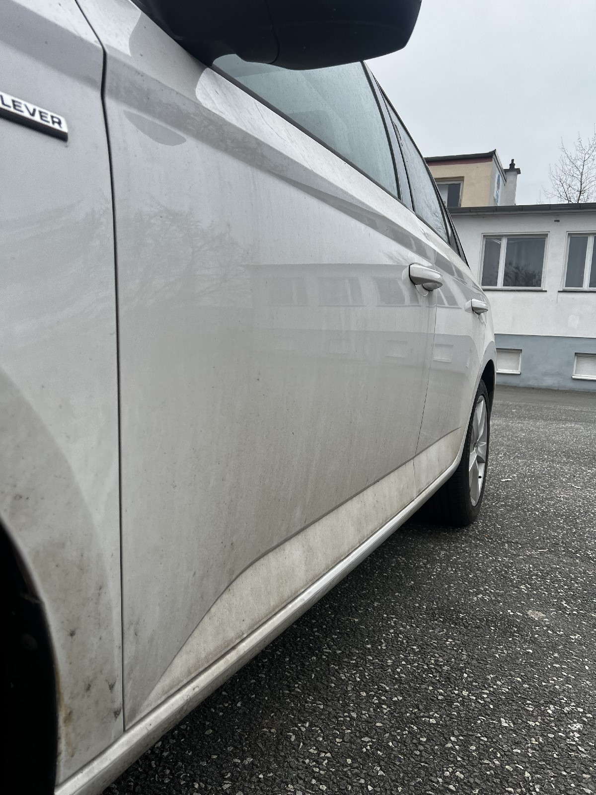
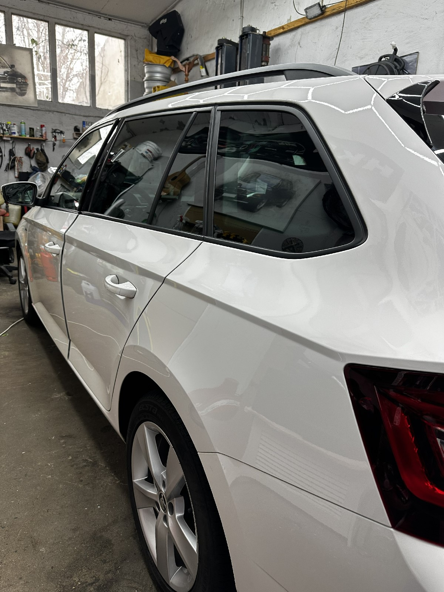

Lackpolitur, Versiegelung, Ceramic Coating – dein Fahrzeug erstrahlt in neuem Glanz. Professionell bis ins letzte Detail.
Kratzer, Wasserflecken, oxidierter Lack – die Außenhaut deines Fahrzeugs leidet täglich. Wir polieren, versiegeln und schützen deinen Lack auf höchstem Niveau – mit Profi-Materialien und jahrelanger Erfahrung.
Ceramic Coating ist der modernste Lackschutz auf dem Markt. Einmal aufgetragen schützt es deinen Lack jahrelang vor UV-Strahlen, Schmutz, Wasser und Kratzern. Frag uns nach Details!


Wir kommen mit unserem vollausgestatteten Bus direkt zu dir – alles was wir brauchen haben wir dabei.
Einfach Formular ausfüllen – wir melden uns innerhalb von 24 Stunden.